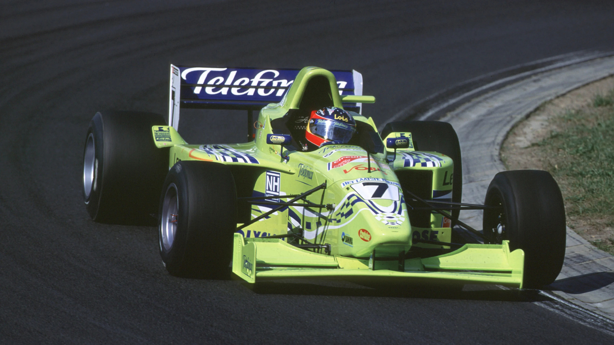

Fernando Alonso Díaz é um piloto espanhol de Fórmula 1, nascido em 29 de julho de 1981, em Oviedo, na Espanha. Considerado um dos maiores talentos da história do automobilismo, Alonso é reconhecido por sua agressividade controlada, sua capacidade de extrair desempenho de carros limitados e seu profundo conhecimento técnico. Bicampeão mundial, tornou-se um ícone esportivo global e um dos pilotos mais completos de sua geração.

Alonso construiu uma carreira extremamente sólida no kart, considerada por muitos a base de sua habilidade técnica e sensibilidade com o carro.
A transição para os monopostos aconteceu em 1999, quando Alonso iniciou sua carreira na Euro Open Movistar by Nissan (conhecida como Fórmula Nissan), campeonato criado para revelar novos talentos.
Em 2000, Fernando Alonso foi promovido para a International Formula 3000, a categoria imediatamente abaixo da Fórmula 1 na época. Correndo pela equipe Team Astromega, ele mostrou velocidade mesmo sendo um novato:
Sua performance chamou a atenção de Flavio Briatore, então chefe da Benetton (que viraria Renault). Briatore contratou Alonso como piloto júnior, preparando seu caminho para a Fórmula 1.
Graças ao apoio de Briatore, Alonso foi colocado na equipe Minardi em 2001. Apesar do carro fraco, sua performance foi tão impressionante que muitos engenheiros afirmam que ele estava “dirigindo acima do limite possível do equipamento”.